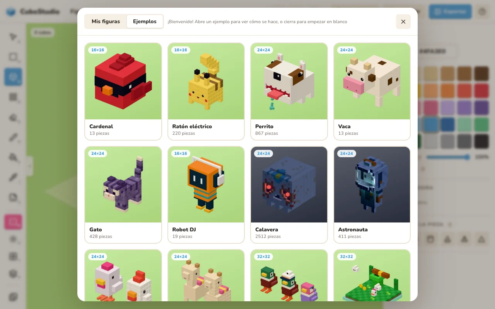

Bienvenida
La primera vez que abres CuboStudio se abre Mis figuras con la bienvenida.
- Dónde
- Al abrir la app por primera vez, y cada vez que te quedas sin figuras.
- Cómo
- Hacer el recorrido: unos globitos te señalan cada parte de la pantalla. Toma un minuto.
- Ver la guía: esta página.
- Ver ejemplos: figuras listas; al abrir una se crea una copia para ti.
- Cerrar la ventana: empiezas con una figura en blanco.
- Detalles
- El recorrido y esta guía siempre están en el botón ?, arriba a la derecha.

Tip: todo se guarda solo. En cuanto pones la primera pieza, tu figura aparece en Mis figuras.